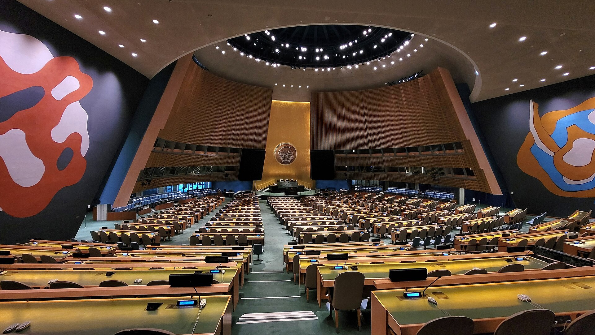

Birlashgan Millatlar Tashkiloti (BMT) qanday ishlaydi: tuzilma, Xavfsizlik Kengashi va Oʻzbekiston aʼzoligi
BMT 1945-yilda tashkil etilgan; bugun 193 aʼzo davlatni birlashtiradi. Bosh Assambleya, Xavfsizlik Kengashi, veto huquqi, bosh kotib va asosiy agentliklar qanday ishlaydi — hamda Oʻzbekiston 1992-yildan beri bu tizimda qanday ishtirok etadi.

Birlashgan Millatlar Tashkiloti (BMT) — dunyodagi eng yirik xalqaro tashkilot boʻlib, Ikkinchi jahon urushidan soʻng xalqaro tinchlik va xavfsizlikni saqlash, davlatlar oʻrtasida hamkorlikni rivojlantirish maqsadida tuzilgan. BMT Nizomi 1945-yil 26-iyunda San-Fransiskoda 50 davlat tomonidan imzolandi va 1945-yil 24-oktyabrda kuchga kirdi; shu sababli 24-oktyabr bugun BMT kuni sifatida nishonlanadi. Tashkilotning dastlabki aʼzolari soni 51 ta boʻlgan, bosh qarorgohi esa Nyu-York shahrida joylashgan (Manba: un.org — BMT Nizomi; Wikipedia — Charter of the United Nations).
Oltita asosiy organ
BMT oltita bosh organdan iborat. Bosh Assambleya — barcha aʼzo davlatlar vakillik qiladigan asosiy muhokama va qaror qabul qilish organi. Xavfsizlik Kengashi — xalqaro tinchlik va xavfsizlikni saqlash uchun asosiy masʼul organ. Iqtisodiy va Ijtimoiy Kengash (ECOSOC) — iqtisodiy, ijtimoiy va shunga oid faoliyatni muvofiqlashtiradi. Vasiylik Kengashi — oʻz-oʻzini boshqarishga oʻtayotgan hududlar ustidan nazorat olib borgan, biroq soʻnggi vasiylik hududi Palau mustaqil boʻlgach, 1994-yil 1-noyabrda faoliyatini toʻxtatgan. Xalqaro Sud (ICJ) — tashkilotning bosh sud organi boʻlib, yagona organ sifatida Nyu-Yorkda emas, Niderlandiyaning Gaaga shahridagi Tinchlik saroyida joylashgan. Kotibiyat esa kundalik ishlarni bajaradi va uni Bosh kotib boshqaradi (Manba: un.org — Main Bodies; Britannica — United Nations: Principal organs).
Bosh Assambleya: har bir davlatga bitta ovoz
Hozirda Bosh Assambleyada 193 aʼzo davlat ishtirok etadi va ularning har biri — hajmi, aholisi yoki iqtisodiy qudratidan qatʼi nazar — bitta teng ovozga ega. Nizomning 18-moddasiga koʻra, eng muhim masalalar — masalan, tinchlik va xavfsizlik, aʼzolikka qabul qilish yoki chiqarish, byudjet — boʻyicha qaror qabul qilish uchun ovoz berishda qatnashganlarning uchdan ikki qismi koʻpchiligi talab etiladi; qolgan koʻplab masalalarda oddiy koʻpchilik yetarli (Manba: un.org — General Assembly; Wikipedia — United Nations General Assembly resolution).

Xavfsizlik Kengashi va veto huquqi
Xavfsizlik Kengashi 15 aʼzodan iborat: 5 doimiy va 10 doimiy boʻlmagan aʼzo. Doimiy beshlik — Xitoy, Fransiya, Rossiya, Buyuk Britaniya va Qoʻshma Shtatlar — veto huquqiga ega. Doimiy boʻlmagan 10 aʼzo Bosh Assambleya tomonidan ikki yillik muddatga saylanadi va vetoga ega emas. Mohiyatan muhim (protsessual boʻlmagan) rezolyutsiyalar qabul qilinishi uchun 9 ta yoqlovchi ovoz, shu jumladan beshta doimiy aʼzoning barchasi qarshi boʻlmasligi talab etiladi — demak, doimiy beshlikdan istalgan biri bunday rezolyutsiyani bloklab (veto qoʻyib) qoʻyishi mumkin (Manba: un.org — Security Council current members; Britannica — UN Security Council).
Bosh kotib
Bosh kotib BMTning bosh maʼmuriy mansabdori hisoblanadi va Kotibiyatni boshqaradi. Lavozim muddati — besh yil, qayta saylanishi mumkin, odat boʻyicha ikki muddat bilan cheklanadi. 2017-yildan buyon bu lavozimni tashkilotning 9-Bosh kotibi Antoniu Guterrish (Portugaliya) egallab turibdi; uning ikkinchi muddati 2026-yil oxirida yakunlanadi (Manba: un.org — About the Secretary-General; Britannica — António Guterres).
Asosiy agentlik va dasturlar
BMT tizimiga koʻplab ixtisoslashgan agentlik, fond va dasturlar kiradi. YUNISEF bolalar huquqlari, hayoti va rivojini himoya qiladi. BQPK (UNHCR) — qochqinlar va majburan koʻchirilgan odamlarni himoya qiluvchi agentlik. Jahon sogʻliqni saqlash tashkiloti (JSST/WHO) xalqaro sogʻliqni saqlash masalalari bilan shugʻullanadi. YUNESKO taʼlim, fan va madaniyat orqali hamkorlikni rivojlantiradi. BMT Taraqqiyot dasturi (UNDP) qashshoqlik va tengsizlikka qarshi kurashadi. Jahon oziq-ovqat dasturi (WFP) ocharchilikka qarshi kurashning birinchi saflarida turadi va 2020-yilda Nobel tinchlik mukofotiga sazovor boʻlgan (Manba: un.org — The UN System; UNHCR — The UN and international institutions).
Oʻzbekiston va BMT
Oʻzbekiston BMTga mustaqillikdan taxminan olti oy oʻtib, 1992-yil 2-martda — Armaniston, Ozarbayjon, Qozogʻiston, Qirgʻiziston, Moldova, Tojikiston va Turkmaniston bilan bir kunda — aʼzo boʻldi. BMTning Toshkentdagi vakolatxonasi 1993-yilda ochilgan; bugungi kunda mamlakatda tashkilotning qariyb 25 ta agentligi, fondi va dasturi faoliyat yuritadi. Oʻzbekiston 2020-yil 13-oktyabrda ilk bor BMT Inson huquqlari kengashiga 2021–2023-yillarga saylandi. Mamlakat tashabbusi bilan 2018-yil noyabrda Orol dengizi mintaqasi uchun BMT koʻp tomonlama inson xavfsizligi ishonch jamgʻarmasi tashkil etilgan (Manba: uzbekistan.un.org; un.int — Uzbekistan and the UN; UN News, 2018).
Byudjet qanday shakllanadi
BMT asosan aʼzo davlatlarning majburiy badallari (belgilangan toʻlovlar) hisobidan moliyalanadi. Toʻlov miqdori har uch yilda kelishiladigan «badallar shkalasi» asosida, har bir davlatning toʻlov qobiliyatiga (yalpi milliy daromadiga) qarab belgilanadi: eng past chegara 0,001%, eng yuqori chegara esa 22%. Qoʻshma Shtatlar muntazam byudjetga eng koʻp (eng yuqori 22% stavkada) badal toʻlovchi davlat hisoblanadi (Manba: Congressional Research Service — U.S. Funding to the UN System; Wikipedia — United States and the United Nations).
Nega bu muhim
BMT tuzilmasini bilish xalqaro yangiliklarni toʻgʻri tushunishga yordam beradi: Xavfsizlik Kengashidagi veto nega baʼzi qarorlarni toʻxtatib qoʻyishini, Bosh Assambleya rezolyutsiyalari qanday qabul qilinishini va Oʻzbekiston bu tizimda qayerda turishini anglash imkonini beradi. Ushbu maqola faqat tasdiqlangan sana va raqamlarni keltiradi; baho va talqinlar bu yerda berilmaydi.

Manbalar
- United Nations — UN Charter
- United Nations — Main Bodies
- United Nations — Current Members of the Security Council
- United Nations — About the Secretary-General
- UN in Uzbekistan — About the UN
- Permanent Mission of Uzbekistan to the UN — Uzbekistan and the UN
- Congressional Research Service — U.S. Funding to the UN System
- Britannica — United Nations